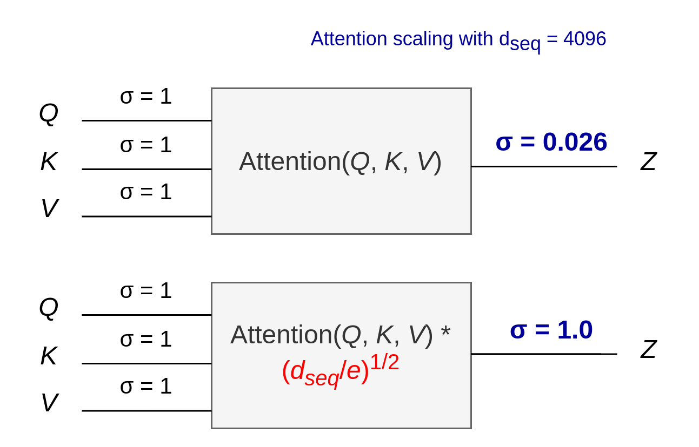

4. Unit Scaling blog
4.1. Almost scaled dot-product self attention
Transformers seem to be all you need, but we don’t fully understand why they work so well. While working on unit scaling, we noticed something surprising about attention, the heart of the transformer architecture, and how the outputs are scaled…
Douglas Orr October, 2023